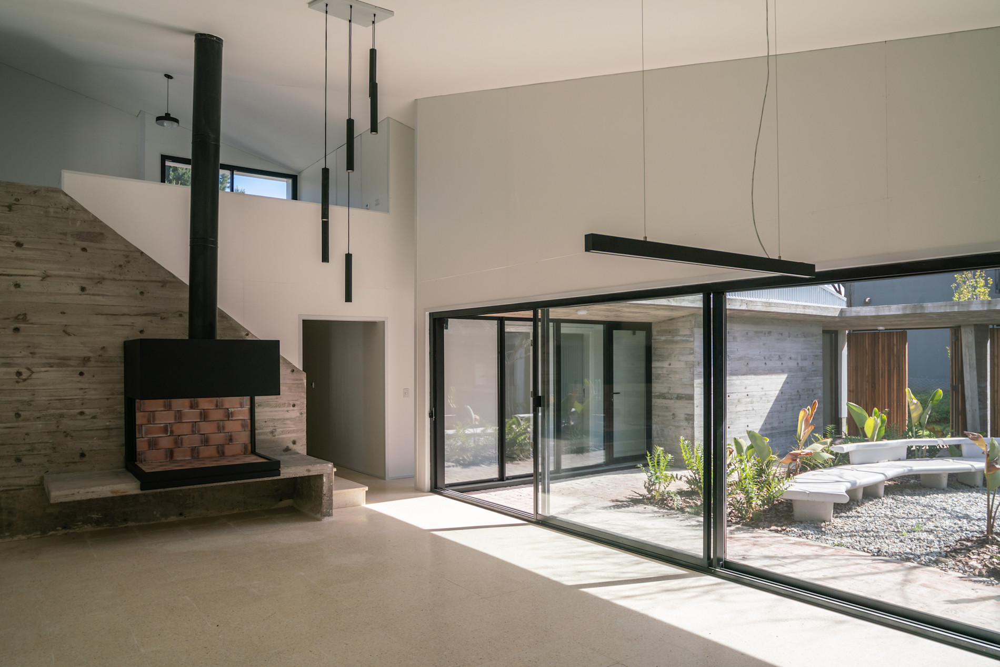
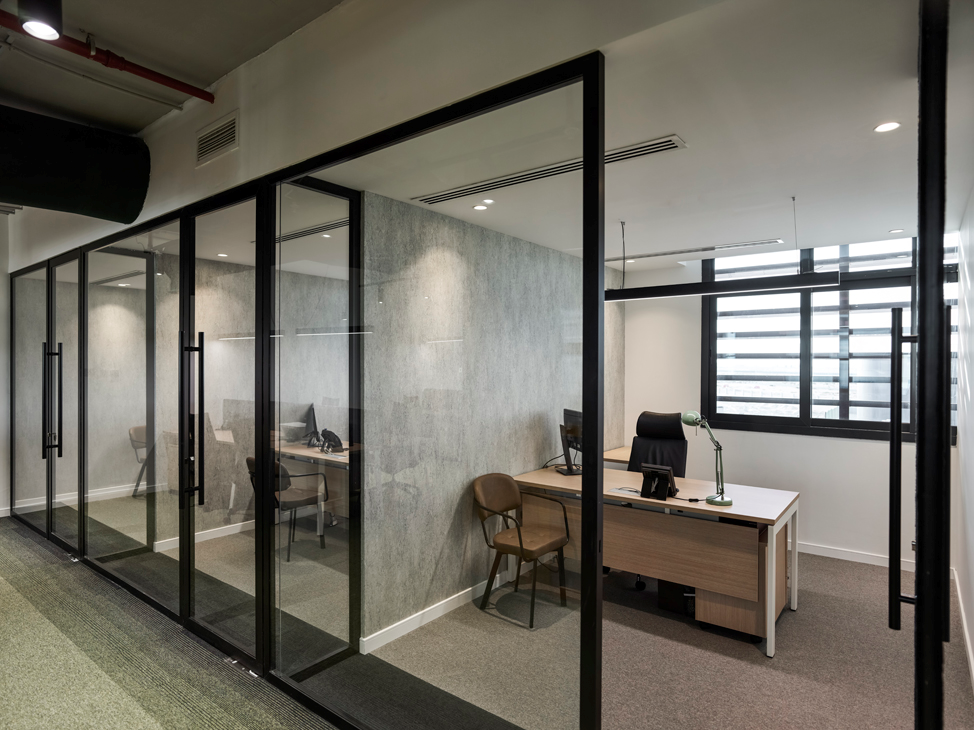

Aluminium · Glass · Installation
Modern aluminium.
Made to fit.
Quality windows, doors, glass and partitioning solutions—manufactured and installed for homes, offices and commercial spaces.
Workshop & Showroom 12A Main Street, Bulawayo


About Smartview
Made to fit.
Built to last.
Smartview Aluminiums specialises in the manufacture and installation of aluminium windows and doors for residential, office and commercial spaces.
Our work extends beyond new installations. We service sliding and folding doors, replace broken glass, install new glass and manufacture aluminium partitions for offices and shops.
Our services
Aluminium & glass
solutions.
From manufacturing to installation, repair and replacement, Smartview provides practical solutions for homes and businesses.
Why Smartview
Function.
Style.
Precision.
Good aluminium work should improve both the appearance and everyday usability of a space. Smartview brings manufacturing, installation and servicing together—from quotation through to completion.
Windows & doors
Designed around
your space.
Frame the light.
Keep the view.
Practical aluminium window solutions manufactured around project dimensions and professionally installed.
- Made to size
- Residential
- Commercial
- Professional installation
Move between spaces
with ease.
Purpose-made aluminium door solutions for everyday movement, wide openings and commercial access.
- Sliding doors
- Folding doors
- Entry solutions
- Commercial door systems
Door servicing
Doors should move
the way they should.
Smartview services existing sliding and folding aluminium doors as well as supplying and installing new systems.
Glass services
Broken glass?
We can help.
Smartview replaces broken glass and carries out new glass installations for suitable aluminium window, door and partition systems.
Request glass replacementCommercial spaces
Smarter spaces with
aluminium & glass.
Create clean, practical office and retail environments with aluminium partition systems manufactured and installed to suit the space.
- Office partitions
- Shop partitions
- Commercial interiors
- Reception divisions
- Glass and aluminium space separation
Our work
A closer look at
the possibilities.
Architectural references shown while Smartview’s project archive is prepared. These are temporary and ready to be replaced with completed installation photography.
Visit the workshop and showroom to view available aluminium solutions and discuss your project. You can also send the sizes you need for a quotation.
- 01Visit or contact usCome to the showroom or send your requirements.
- 02Send your sizesProvide approximate measurements and the product type.
- 03Get a quotationSmartview will prepare a quotation around your project.
Start your project
Request a
quotation.
Share the basics now. The form prepares a clear enquiry you can copy or download; direct delivery can be connected when Smartview confirms its official inbox.
Your next project
Let’s build a
clearer view.
Windows, doors, glass or partitions—tell Smartview what you’re working on.
Request a quote